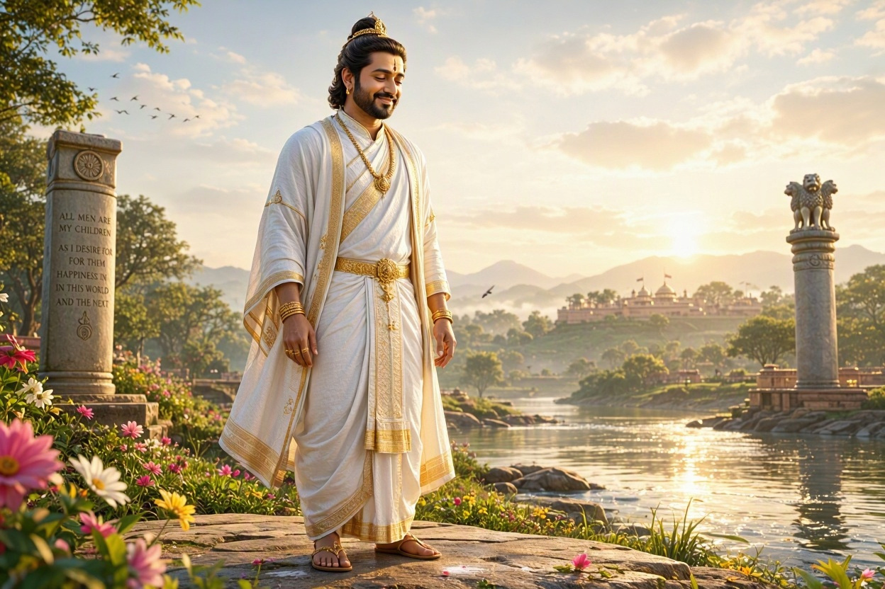
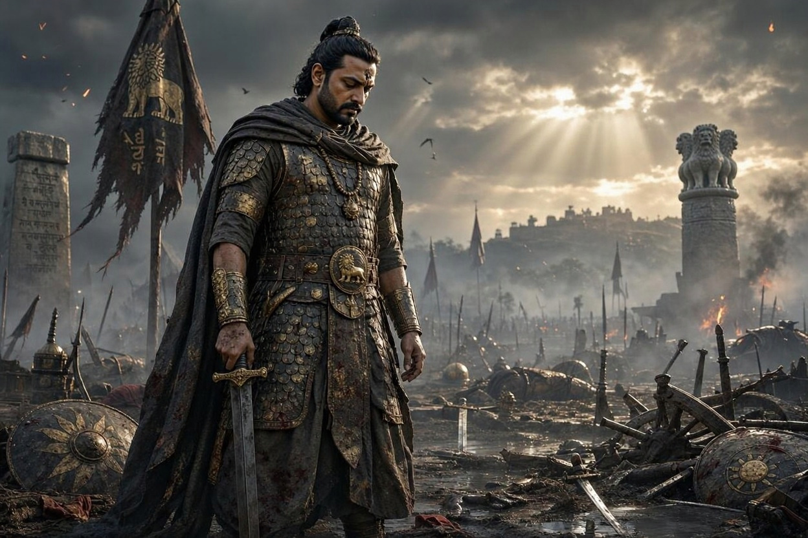

☸ Ashoka's chakra has 24 spokes ☸ Pataliputra had 64 gates ☸ Chandragupta received 500 war elephants from Seleucus ☸ Ashoka's edicts were carved on rocks and pillars ☸ The Mauryan Empire lasted about 137 years
☸ Ashoka's chakra has 24 spokes ☸ Pataliputra had 64 gates ☸ Chandragupta received 500 war elephants from Seleucus ☸ Ashoka's edicts were carved on rocks and pillars ☸ The Mauryan Empire lasted about 137 years
The Big Picture
Hover (or tap) each card to turn it over
More than 2,300 years ago, northern India was divided into many kingdoms. The Mauryas united most of the subcontinent under one government for the first time. They built roads, cities and a powerful army, and one of their emperors, Ashoka, left messages on stone that we can still read today.
FOUNDEDc. 322 BCEWho started it?
Chandragupta Maurya, guided by his teacher Chanakya (also called Kautilya), took over Magadha from the Nanda dynasty.
CAPITALPataliputraWhere was it?
It stood near where the Ganga and Son rivers meet. Today the city is called Patna, in Bihar.
GREATEST RULERAshokaWhy famous?
After the terrible Kalinga War, Ashoka chose a path of peace, kindness and dhamma, and shared it across his empire.
BIGGEST SIZE≈ 5 million km²How large?
At its height it stretched from Afghanistan in the northwest to Bengal in the east. Historians' estimates differ.
Timeline of the Empire
"c." means circa, or "around". Dates are approximate.
c. 322 BCE
Chandragupta Takes Pataliputra
With Chanakya's plans, Chandragupta defeats the Nanda king and becomes the first Mauryan emperor.
c. 305 BCE
Face-off with Seleucus
Seleucus, a general of Alexander, tries to win lands in the northwest. A treaty follows: Chandragupta gains territory and gives 500 war elephants.
c. 297 BCE
Bindusara Becomes Emperor
Chandragupta's son rules and pushes the empire further south into the Deccan.
c. 268 BCE
Ashoka Takes the Throne
Bindusara's son Ashoka becomes emperor and rules from Pataliputra.
c. 261 BCE
The Kalinga War
Ashoka conquers Kalinga (today's Odisha). His own edict says around 100,000 people were killed. He is filled with sorrow.
c. 250 BCE (tradition)
Messengers of Peace
Buddhist teachings travel to Sri Lanka and beyond. Tradition says Ashoka's son Mahinda and daughter Sanghamitta carried them.
c. 232 BCE
Ashoka Dies
After about 36 years of rule, the great emperor passes away. The empire slowly weakens.
c. 185 BCE
The End of the Mauryas
The last Mauryan king, Brihadratha, is killed by his army chief Pushyamitra Shunga, who starts the Shunga dynasty.
Three Great Rulers
Click a name to meet each emperor
ITHE FOUNDER
Chandragupta Maurya
RULED c. 322 – 297 BCE
The empire builder. With advice from Chanakya, he removed the Nanda dynasty, united the north and defended the northwest against Seleucus.
Built a strong army and a spy network
Met Megasthenes, the Greek ambassador who wrote Indica
Jain tradition says he gave up his throne late in life
Fun fact Chandragupta's peace treaty with Seleucus included 500 war elephants, which later helped Seleucus in battle.
IITHE EXPANDER
Bindusara
RULED c. 297 – 273 BCE
Chandragupta's son kept the empire strong and extended it far into the south. Greek writers called him "Amitrochates", which comes from a title meaning "slayer of enemies".
Kept friendly links with Greek kingdoms in the west
Faced and settled rebellions in Taxila
Passed a huge, well-run empire to Ashoka
Fun fact A story from the Greek writer Athenaeus says Bindusara asked a Greek king to send sweet wine, dried figs and a philosopher. He received the wine and figs, but the philosopher was "not for sale".
IIITHE PEACEMAKER
Ashoka the Great
RULED c. 268 – 232 BCE
After the Kalinga War, Ashoka felt deep regret. He turned to Buddhism and a rule of dhamma: kindness, honesty, respect and care for all living things.
Carved messages on rocks and pillars across the land
Planted shade trees, dug wells and built rest houses
Called himself "Devanampiya Piyadasi", Beloved of the Gods
Fun fact People forgot how to read Ashoka's Brahmi writing for centuries. In 1837, James Prinsep worked out the script, and Ashoka's name came back to life.
Watch the Empire Grow
Choose a ruler, then hover over the glowing cities
Chandragupta's empire: Northern India, the Ganga plains and the northwest, from Bengal to Afghanistan, plus Gujarat and Malwa. The dotted line is the old royal road linking Pataliputra to Taxila.
Bindusara adds: Large parts of the Deccan plateau, taking the empire deep into the south.
Ashoka adds: Kalinga on the east coast, the last great conquest of the Mauryas. After this war, Ashoka stopped conquering.
City stories
Click a glowing city on the map to read about it.
Hand-drawn, simplified map. Not to scale. Borders are approximate.
From War to Peace
Drag the golden bar to see what changed after Kalinga
In about 261 BCE Ashoka won a terrible war in Kalinga. Afterwards he carved that he felt deep sorrow, and he chose a new way to rule that he called dhamma: kindness, honesty and respect for everyone. Slide from the battlefield to the peaceful empire he tried to build.


BeforeWar, c. 261 BCEAfterDhamma
◀ ▶
Drag, tap anywhere on the picture, or use the ← → keys.
Before
The Kalinga War
Ashoka's Rock Edict XIII says about 100,000 people were killed and about 150,000 were carried away.Many more died of hunger and sickness.
He wrote that he felt deep sorrow and regret for the suffering.
After this he gave up conquering by war.
After
The Way of Dhamma
Dhamma means right living: kindness, honesty, and care for others.
Roads got shade trees, wells and rest houses, and there was medical care for people and animals.Rock Edict II
Special officers, the dhamma-mahamatras, travelled to look after people's welfare.Rock Edict V
He asked people to respect all faiths.Rock Edict XII
Images: illustrations provided by our team for this project, not photographs or ancient paintings.
Life in the Empire
Open each scroll to discover its secrets
A Giant Government
The emperor sat at the top and was helped by a council of ministers. The empire was split into provinces, often ruled by royal princes or trusted governors, with capitals such as Taxila, Ujjain, Tosali and Suvarnagiri.
Officials checked markets, roads, mines, weights and measures so that trade stayed fair.
Pataliputra, the Wooden City
The Greek ambassador Megasthenes described Pataliputra as a long city surrounded by a strong wooden wall with 64 gates and 570 towers, plus a wide moat. Archaeologists have found remains of this wooden palisade.
The Mighty Army
Ancient writers say the army had hundreds of thousands of foot soldiers and thousands of cavalry, chariots and elephants. One Roman writer, Pliny, gave very large numbers, which historians treat with care.
The four parts of an ancient Indian army were infantry, cavalry, chariots and war elephants.
Spies and Secrets
The Arthashastra, a book of statecraft linked to Chanakya (Kautilya), describes a spy system. Spies could pose as merchants, wandering teachers or villagers to bring the king news from every corner of the land.
Coins, Markets and Taxes
People used silver punch-marked coins stamped with symbols like the sun, hills and trees. Farmers paid part of their crop as tax, often described as about one-sixth. Traders carried cotton, spices, pearls, ivory and gems along the royal road and sea routes.
Roads, Trees and Rest Houses
Ashoka's edicts say he had banyan and mango trees planted along roads, wells dug and rest houses built so travellers and animals could rest in the shade.
Ashoka's Messages in Stone
Hover (or tap) a tablet to read what it says
Ashoka had his messages carved on rocks and pillars in many places so ordinary people could read them. They are written mostly in Brahmi script in the Prakrit language. Here are four of the big ideas, put into simple words.
ROCK EDICT XIII
Sorrow for Kalinga
Ashoka says he felt deep regret for the suffering caused by the Kalinga War. From now on, he wants to win people through dhamma, not weapons.
ROCK EDICT II
Care for All
Medical care for people and animals, medicinal plants, shade trees along roads, and wells for travellers. A ruler should look after everyone.
PILLAR EDICTS
Be Kind
Respect your parents, elders and teachers. Be generous, treat servants kindly, and protect animals from needless harm.
ROCK EDICT XII
Respect All Faiths
People should honour each other's beliefs and not insult other faiths. Listening to one another helps everyone live together in peace.
These are our own simple summaries, not word-for-word translations.
Ashoka set up tall, polished sandstone pillars across the empire. Many carried his messages, and some were topped by animals such as lions, bulls or elephants. The famous lion capital from Sarnath is now India's national emblem.
This is a simplified drawing made for this project.
Tip: press the ← and → keys to see the next treasure.
Mauryan silver coins were not struck with a die. Small symbols were punched into a piece of silver one at a time. Common signs include the sun, a wheel-like shape, a hill with a crescent and a tree inside a railing.
A simplified drawing, not a copy of a real coin.
Tip: press the ← and → keys to see the next treasure.
The wheel stands for the law of dhamma, moving forward. The Ashoka Chakra on India's national flag has 24 spokes. Count them if you like.
Tip: press the ← and → keys to see the next treasure.
The Empire's Handbook
Drag a page by its edge, like a real book
The Empire's Handbook
The Mauryan Empire c. 322 – 185 BCE
DRAG OR CLICK TO OPEN
Inside This Handbook
Who Were the Mauryas?
Key Dates
Key People
Words to Know
Government & Army
Ashoka's Dhamma
Trade, Coins & Roads
Legacy Today
Think Like a Historian
❖ ❖ ❖
Contents
Who Were the Mauryas?
A dynasty that ruled most of the Indian subcontinent from about 322 to 185 BCE.
Its capital was Pataliputra. Chandragupta Maurya founded it, and his grandson Ashoka made it famous.
1
Key Dates
322 BCE Chandragupta takes Pataliputra
305 BCE Treaty with Seleucus
261 BCE The Kalinga War
232 BCE Ashoka dies
185 BCE The empire ends
2
Key People
Chandragupta the founder
Chanakya his teacher and adviser
Bindusara expanded the empire south
Ashoka chose peace
Megasthenes Greek ambassador who wrote Indica
3
Words to Know
Dynasty a family of rulers
Edict a royal message carved in stone
Dhamma Ashoka's code of kindness
Brahmi the ancient script of the edicts
Stupa a dome-shaped Buddhist monument
4
Government & Army
The emperor ruled with ministers. Provinces were run by princes or governors.
The army had four parts: infantry, cavalry, chariots and elephants. Spies kept the king informed.
5
Ashoka's Dhamma
After the Kalinga War, Ashoka felt deep regret and chose a new path.
Be kind to all
Respect elders
Honour all faiths
Care for animals
6
Trade, Coins & Roads
People used silver punch-marked coins. A royal road linked Pataliputra to Taxila.
Traders carried cotton, spices, pearls and ivory. Farmers paid part of their crop as tax.
7
Legacy Today
The lion capital of Sarnath is India's national emblem
The Ashoka Chakra sits on the flag
The edicts help historians learn about the past
8
Think Like a Historian
Why did Ashoka carve messages in stone?
Why would a huge empire need roads and spies?
How do we learn about the past without photographs?
Discuss these with your team!
9
The End
Made by Advik Goyal, Bhuvik Garyali & Aadvik Bansal
CLICK TO READ AGAIN
Grab a page and drag it across. The paper folds where you hold it: grab a corner for a diagonal fold, or the middle of the edge for a straight one. You can also just click or tap: right page to go forward, left page to go back.
Why It Still Matters
The Mauryan footprint in today's India
National Emblem
India's national emblem comes from the lion capital of an Ashokan pillar found at Sarnath.
The Flag's Wheel
The 24-spoke Ashoka Chakra sits at the centre of the Indian flag.
Spread of Buddhism
Ashoka's support helped Buddhism reach Sri Lanka and other parts of Asia.
A Model of Governance
Provinces, officials, roads and tax records showed how a vast land could be run as one state.
Writing Our Past
Ashoka's edicts are among the earliest long written records in India and help historians reconstruct his reign.
Test Your Knowledge
Pick an answer. The score updates by itself.
Your scoreChange any answer to update your score.
About Us
The team behind this project
We are three students who teamed up to explore one of the greatest chapters of Indian history. We read, researched and built this project together to share the story of the Mauryan Empire in a fun and interactive way.
The Mauryan Empire was the first to bring most of the subcontinent under one government. Ashoka's story is the part we love most: a powerful king who looked at the pain of war and chose peace, and left messages in stone for us to read 2,000 years later.
Advik leads the look and feel of our website. He is in charge of the dark, antique colours, the page layout, the animations and the interactive features, so that the story of the Mauryas is fun to explore from the first scroll to the last.
Aadvik leads our roleplay. He plans the characters, the words they speak and the scenes we act out, from Chandragupta and Chanakya building an empire to Ashoka's change of heart after Kalinga, so that history comes alive on stage.
Bhuvik leads our presentation. He shapes how the slides look, decides the order in which we tell the story, and makes sure our ideas are shown clearly and confidently to the judges and the class.